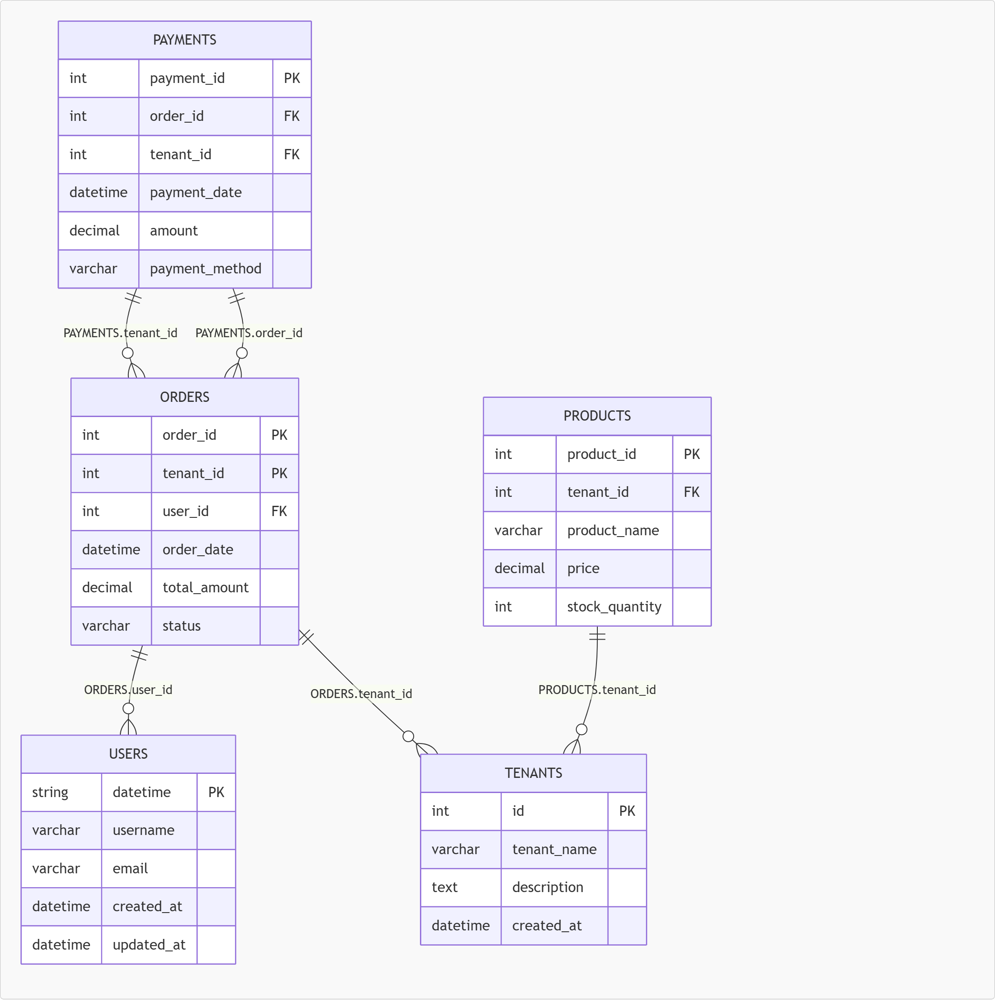

SQLのSELECT文からER図を作成する方法を解説します。
JOINが複雑でテーブル構造が分かりづらい場合でも、SELECT文だけで関係性を可視化できます。
ER図とは、データベースの構造を視覚的に表現した図です。
これらを図として表すことで、データの構造を直感的に理解できます。

結合テーブルが増えるほど、SQLだけでは構造理解が難しくなります。 ER図があることで、全体像を一目で把握できます。
既存システムの改修時、ER図があると影響範囲の特定が容易になり 作業コストを削減できます。
テーブル定義を探す手間なくても、目の前にあるSELECT文だけで構造を可視化できます。
視覚化されることで、非エンジニアでも理解しやすくなり、新人のキャッチアップにも役立ちます。
通常、ER図はCREATE TABLEなどのDDLから作成されることが多いですが、
実はSELECT文からでもテーブル同士の関係を読み取ることができます。
その理由は、SELECT文にはテーブル間の結合条件（リレーション）が明示されているためです。
例えば以下のSQLを見てみます。
SELECT * FROM users u JOIN orders o ON u.id = o.user_id;
このとき
u.id = o.user_id
という条件が記述されています。
これは
の関係を表しており、テーブル同士のリレーションそのものです。
つまり、JOIN + ON句 = ER図の線と考えることができます。
このように、SELECT文の中に含まれる結合条件を解析することで、ER図を自動的に生成することが可能になります。
JOINは、複数のテーブルを結び付けてデータを取得するためのSQL構文です。
結合条件を指定することで、条件に一致するデータのみを結合します。
基本的な書き方は以下の通りです。
SELECT * FROM テーブルA JOIN テーブルB ON 条件;
この「条件」がテーブル同士の関係を定義しています。
SELECT * FROM users u INNER JOIN orders o ON u.id = o.user_id;
SELECT * FROM users u LEFT JOIN orders o ON u.id = o.user_id;
SELECT * FROM users u RIGHT JOIN orders o ON u.id = o.user_id;
JOINは単なるデータ取得ではなく、どのテーブルとどのテーブルがどう繋がっているかを表現しています。
そのため、JOINを解析することで
👉 テーブル間の関係（ER図）を復元できる
というわけです。
ER図生成において最も重要なのがON句の解析です。
ON句には、テーブル同士の結びつきが直接書かれています。
u.id = o.user_id
この1行から読み取れることは以下です。
👉 それぞれ別テーブルのカラム
users.id ← 親
orders.user_id ← 子
JOIN order_items oi ON o.id = oi.order_id
JOIN products p ON oi.product_id = p.id;
👉 1つずつ分解すればOK
👉 それぞれ個別に解析する
これらの課題は、SELECT文からER図を自動生成ツールを活用することで解決できます。
当サイトでは、SQLからER図を自動生成できるツールを提供しています。
👉 ER図生成ツールはこちら
この仕組みを利用することで、DDLがなくてもテーブル構造を可視化することが可能になります。
SQL2ERを使うと、これらを自動で可視化できます
👉 使ってみる
-ENGLISH.gif)